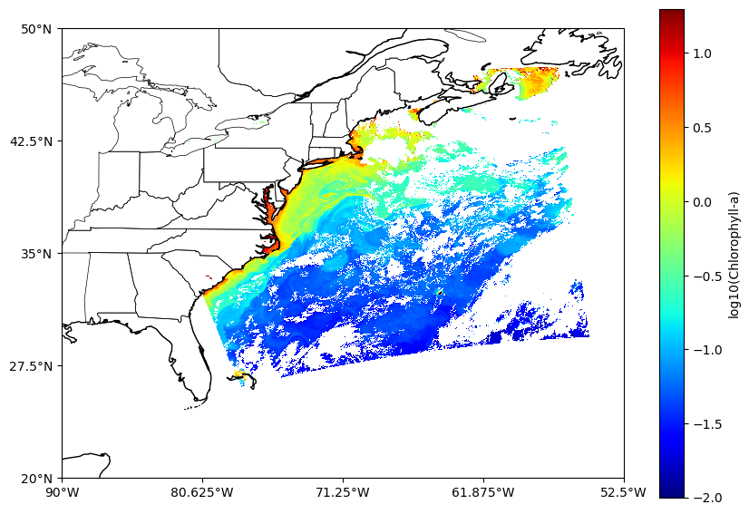

# !pip install cartopy
# !pip install netcdf4Author: Guoqing Wang (guoqing.wang@nasa.gov), OB.DAAC Scientist, NASA GSFC; SSAI
Download, read, and visualize level-2 ocean color data
This tutorial shows an example of downloading, reading, and plot OB.DAAC standard level 2 ocean color file.
import warnings
warnings.filterwarnings("ignore")from matplotlib import pyplot as plt
import pandas as pd
import numpy as np
import urllib.request
import netCDF4 as nc
import cartopy #!pip install cartopy
from cartopy.mpl.ticker import LongitudeFormatter, LatitudeFormatter1. Download file
In this example, I will use the MODIS_AQUA L2 OC file on April 30, 2023 (AQUA_MODIS.20221007T175001.L2.OC.nc).
- Specify your appkey
Generate appkey for your Earthdata login credentials and update the variable “key” correspondingly.
key = 'abcd1234' # paste your appkey here.
filename = 'AQUA_MODIS.20221007T175001.L2.OC.nc' # put here the file name to download
urls = r'https://oceandata.sci.gsfc.nasa.gov/ob/getfile/%s?appkey=%s'%(filename, key)
urllib.request.urlretrieve(urls, filename) # download the file to the current path('AQUA_MODIS.20221007T175001.L2.OC.nc',
<http.client.HTTPMessage at 0x7f3293265180>)2. Loading the Level-2 Dataset
NASA ocean color data are stored in NetCDF files. They can be read with a few different Python modules. The most popular are netCDF4 and gdal. For this script we’ll focus on netCDF4.
Loading a dataset is simple, just pass a NetCDF file path to netCDF4.Dataset().
# open file and print the metadata
f = nc.Dataset(filename, 'r')A NetCDF file consists of three fundamental components: metadata, dimensions, and variables. Variables encompass both metadata and data. The netCDF4 library enables us to retrieve the metadata and data linked to a NetCDF file.
3. Retrieve Metadata
When we print the dataset f, it provides details about the variables present in the file as well as the groups of variables.
print (f)<class 'netCDF4._netCDF4.Dataset'>
root group (NETCDF4 data model, file format HDF5):
title: MODISA Level-2 Data
product_name: AQUA_MODIS.20221007T175001.L2.OC.nc
processing_version: R2022.0
equatorCrossingLongitude: 107.35993
orbit_number: 108659
history: l2gen par=/data19/sdpsoper/vdc/vpu38/workbuf/A2022280175000.L1B_LAC.param metafile=AQUA_MODIS.20221007T175001.L2.OC.nc.meta
instrument: MODIS
platform: Aqua
Conventions: CF-1.6 ACDD-1.3
license: https://science.nasa.gov/earth-science/earth-science-data/data-information-policy/
naming_authority: gov.nasa.gsfc.sci.oceandata
id: R2022.0/L2/AQUA_MODIS.20221007T175001.L2.OC.nc
date_created: 2022-11-29T16:08:55.000Z
keywords_vocabulary: NASA Global Change Master Directory (GCMD) Science Keywords
keywords: Earth Science > Oceans > Ocean Optics > Ocean Color
standard_name_vocabulary: CF Standard Name Table v36
institution: NASA Goddard Space Flight Center, Ocean Ecology Laboratory, Ocean Biology Processing Group
creator_name: NASA/GSFC/OBPG
creator_email: data@oceancolor.gsfc.nasa.gov
creator_url: https://oceandata.sci.gsfc.nasa.gov
project: Ocean Biology Processing Group (NASA/GSFC/OBPG)
publisher_name: NASA/GSFC/OBPG
publisher_url: https://oceandata.sci.gsfc.nasa.gov
publisher_email: data@oceancolor.gsfc.nasa.gov
identifier_product_doi_authority: http://dx.doi.org
identifier_product_doi: 10.5067/AQUA/MODIS/L2/OC/2022
processing_level: L2
cdm_data_type: swath
equatorCrossingDateTime: 2022-10-07T18:31:34.643Z
spatialResolution: 1 km
time_coverage_start: 2022-10-07T17:50:01.477Z
time_coverage_end: 2022-10-07T17:54:59.854Z
start_center_longitude: -66.70454
start_center_latitude: 28.26412
end_center_longitude: -72.15332
end_center_latitude: 46.206642
northernmost_latitude: 47.412445
southernmost_latitude: 26.05069
easternmost_longitude: -54.84424
westernmost_longitude: -86.26568
geospatial_lat_units: degrees_north
geospatial_lon_units: degrees_east
geospatial_lat_max: 47.412445
geospatial_lat_min: 26.05069
geospatial_lon_max: -54.84424
geospatial_lon_min: -86.26568
startDirection: Ascending
endDirection: Ascending
day_night_flag: Day
earth_sun_distance_correction: 1.001212239265442
dimensions(sizes): number_of_lines(2030), pixels_per_line(1354), bands_per_pixel(16), number_of_reflectance_location_values(10), pixel_control_points(1354), number_of_bands(24), number_of_reflective_bands(16)
variables(dimensions):
groups: sensor_band_parameters, scan_line_attributes, geophysical_data, navigation_data, processing_controlAbove you can see information for the file format, data source, data version, citation, dimensions, and variables. In L2 ocean color data, the variables are put in different groups, the ones that we are interested in, such as Rrs, Chla, etc. are in “geophysical_data”, and lat, lon are in “navigation_data”
# print grouped variables
print(f.groups.keys())dict_keys(['sensor_band_parameters', 'scan_line_attributes', 'geophysical_data', 'navigation_data', 'processing_control'])4. Dimensions
Accessing dimensions is akin to accessing file metadata. Each dimension is stored as a dimension class that holds relevant information. To retrieve metadata for all dimensions, one can loop through all the available dimensions, as demonstrated below.
for dim in f.dimensions.values():
print(dim)
# Individual dimensions are accessed like so: f.dimensions['x'].<class 'netCDF4._netCDF4.Dimension'>: name = 'number_of_lines', size = 2030
<class 'netCDF4._netCDF4.Dimension'>: name = 'pixels_per_line', size = 1354
<class 'netCDF4._netCDF4.Dimension'>: name = 'bands_per_pixel', size = 16
<class 'netCDF4._netCDF4.Dimension'>: name = 'number_of_reflectance_location_values', size = 10
<class 'netCDF4._netCDF4.Dimension'>: name = 'pixel_control_points', size = 1354
<class 'netCDF4._netCDF4.Dimension'>: name = 'number_of_bands', size = 24
<class 'netCDF4._netCDF4.Dimension'>: name = 'number_of_reflective_bands', size = 165. Variable Metadata
Access variable metadata in the groups of “geophysical_data” and “navigation_data”.
#print(f.groups['geophysical_data'].variables)
# if you just want to see the variable names, use the following code
print(f.groups['geophysical_data'].variables.keys())dict_keys(['aot_869', 'angstrom', 'Rrs_412', 'Rrs_443', 'Rrs_469', 'Rrs_488', 'Rrs_531', 'Rrs_547', 'Rrs_555', 'Rrs_645', 'Rrs_667', 'Rrs_678', 'chlor_a', 'Kd_490', 'pic', 'poc', 'ipar', 'nflh', 'par', 'l2_flags'])6. Access Data Values
The actual precipitation data values are accessed by array indexing, and a numpy array is returned. All variable data is returned as follows:
# metadata of variable: chlor_a
print(f.groups['geophysical_data'].variables['chlor_a'])<class 'netCDF4._netCDF4.Variable'>
float32 chlor_a(number_of_lines, pixels_per_line)
long_name: Chlorophyll Concentration, OCI Algorithm
units: mg m^-3
standard_name: mass_concentration_of_chlorophyll_in_sea_water
_FillValue: -32767.0
valid_min: 0.001
valid_max: 100.0
reference: Hu, C., Lee Z., and Franz, B.A. (2012). Chlorophyll-a algorithms for oligotrophic oceans: A novel approach based on three-band reflectance difference, J. Geophys. Res., 117, C01011, doi:10.1029/2011JC007395.
path = /geophysical_data
unlimited dimensions:
current shape = (2030, 1354)
filling on# value of chlor_a
chlor_a = f.groups['geophysical_data'].variables['chlor_a'][:]
print(chlor_a)[[0.01556490734219551 0.01509102713316679 0.015974054113030434 ... --
0.20154109597206116 0.18869897723197937]
[0.01652761548757553 0.015768131241202354 0.015580163337290287 ... -- --
--]
[0.015834644436836243 0.01573110558092594 0.01611599512398243 ... -- --
--]
...
[-- 2.553077220916748 1.7888909578323364 ... -- -- --]
[-- 4.523899078369141 3.566077470779419 ... -- -- --]
[-- 2.478635549545288 2.4827561378479004 ... -- -- --]]# read information of lat, lon
print(f.groups['navigation_data'].variables.keys())
lat = f.groups['navigation_data'].variables['latitude'][:]
lon = f.groups['navigation_data'].variables['longitude'][:]
print(lat.shape)
print(lon.shape)
print(chlor_a.shape)
chlor = np.log10(chlor_a)dict_keys(['longitude', 'latitude', 'cntl_pt_cols', 'cntl_pt_rows', 'tilt'])
(2030, 1354)
(2030, 1354)
(2030, 1354)7. Visualization and mapping
Here, we use cartopy for basemap creation and matplotlib to plot data onto the created map. The combination of Matplotlib and Cartopy provides a powerful toolkit for creating geospatial visualizations.
# Plot Chlor_a data
fig = plt.figure(figsize=(10, 7))
map_projection = cartopy.crs.PlateCarree()
ax = plt.axes(projection=map_projection)
im = ax.pcolormesh(lon, lat,np.squeeze(chlor),cmap = 'jet', vmin=-2, vmax=1.3)
ax.coastlines()
ax.add_feature(cartopy.feature.STATES, linewidth=0.5)
ax.set_xticks(np.linspace(-90, -52.5, 5), crs=map_projection)
ax.set_yticks(np.linspace(20, 50, 5), crs=map_projection)
lon_formatter = LongitudeFormatter(zero_direction_label=True)
lat_formatter = LatitudeFormatter()
ax.xaxis.set_major_formatter(lon_formatter)
ax.yaxis.set_major_formatter(lat_formatter)
plt.colorbar(im, label='log10(Chlorophyll-a)',)